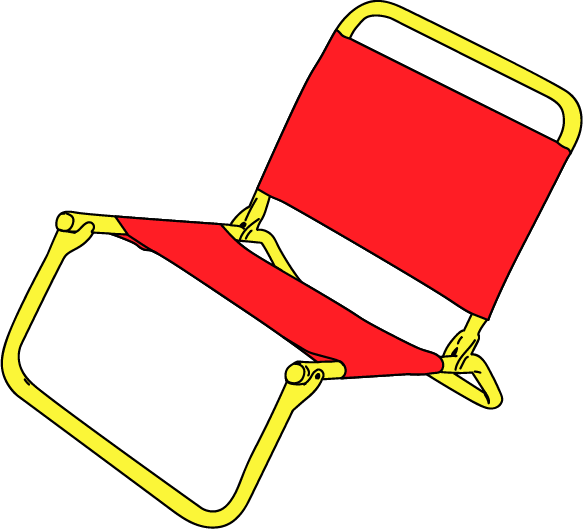
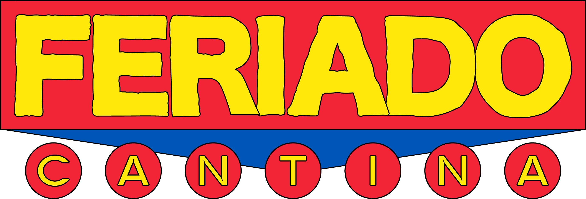
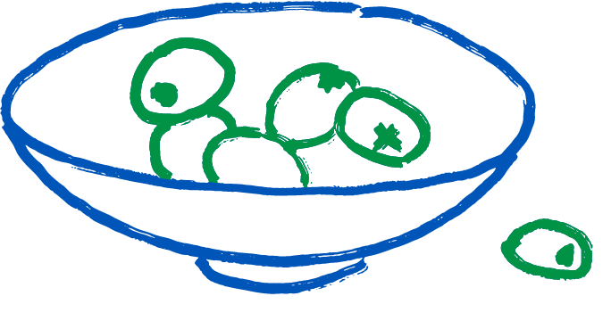
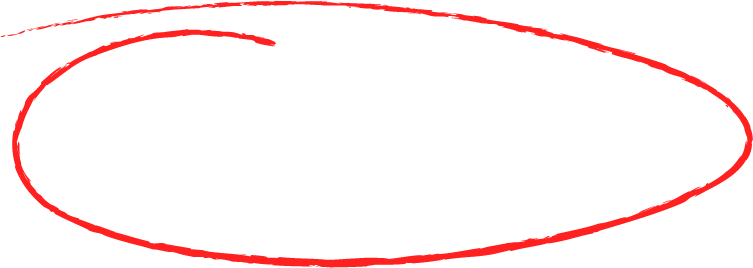
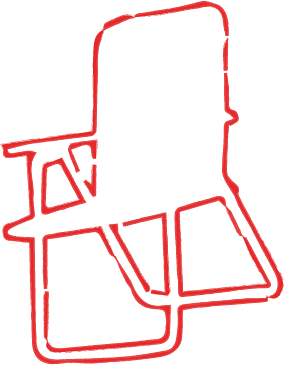
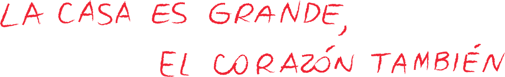

(Salú)

Llegó el momento de tener nuestro propio lugar y recibir a todos nuestros amigos:
Feriado Cantina es la casa de Feriado Vermú. Es donde te juntás con amigos, familia y amores. Es buen morfi, buen chupi, todos los días, todo el día. Es barrio. Es vermú. Es vereda.
Ricos tragos, tortilla babé y largas sobremesas.
Nos vemos pronto,
Vení AntojónSalí Pipón

Especialidades de la casa
Entradas y platitos
Sanguches y ensaladas
Pizzas media masa al corte
Pastas
Minutas
Postres
Cafetería
Coctelería

Opciones
Sin gluten
Vegetarianas
Infantiles


feriados
abiertísimo

El lugar ideal para:
Festejos bien festivos
Campeonatos de Truco
Grandes Tertulias
Sobremesas XL
Somos amigos de las mascotas